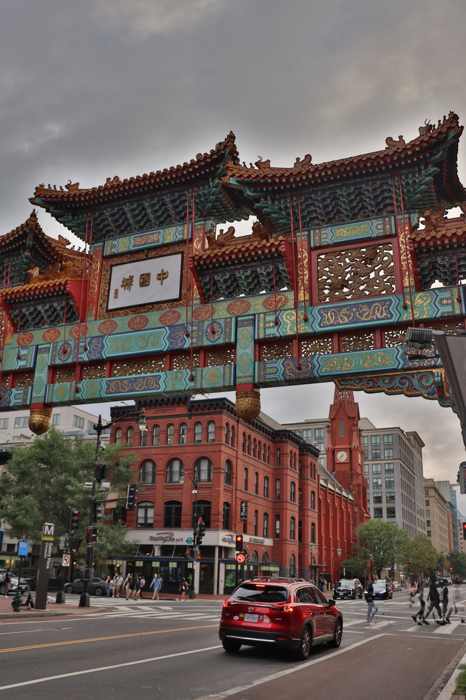
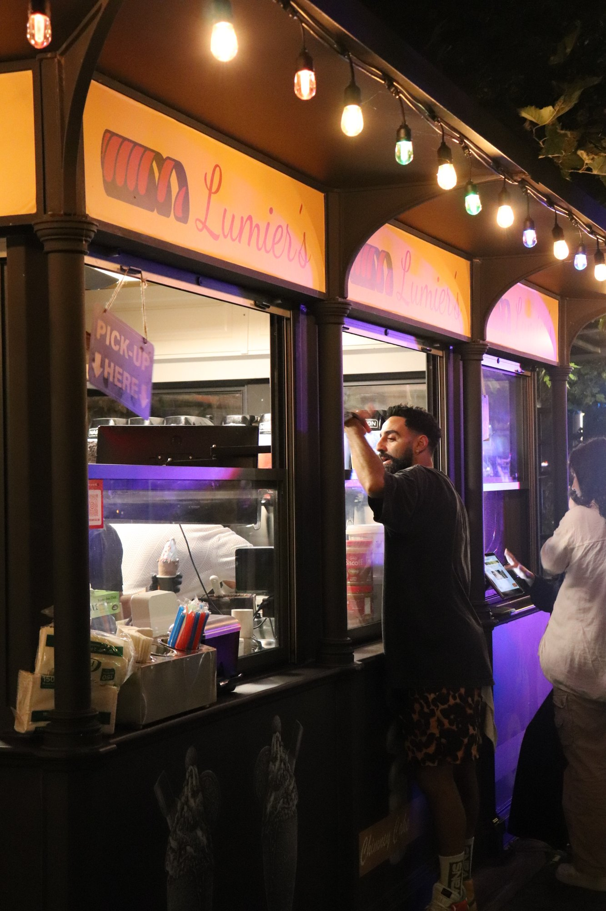
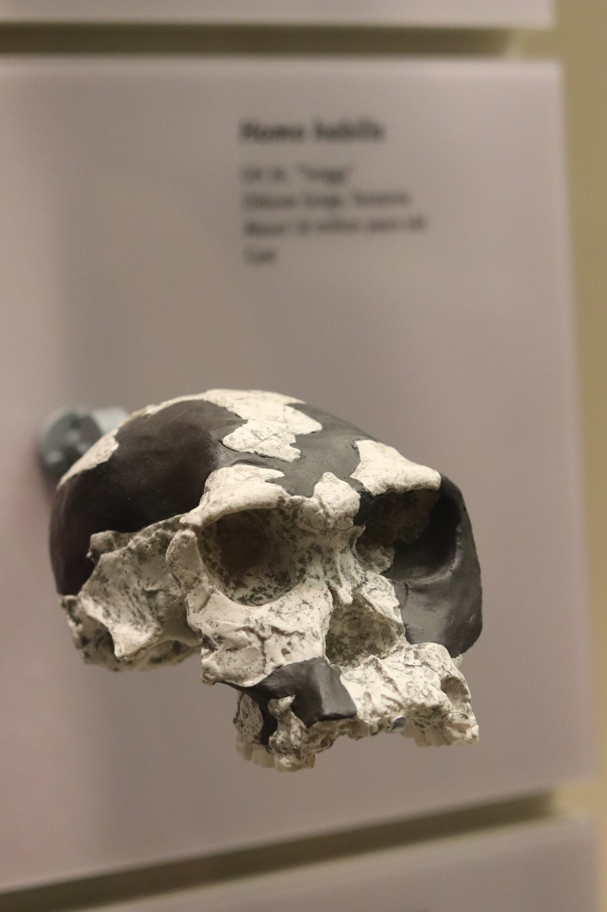
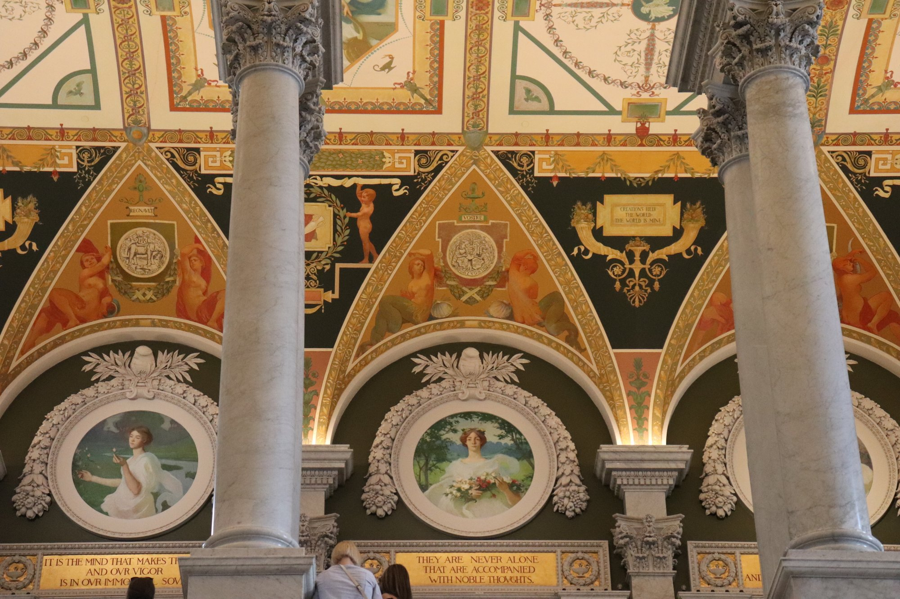
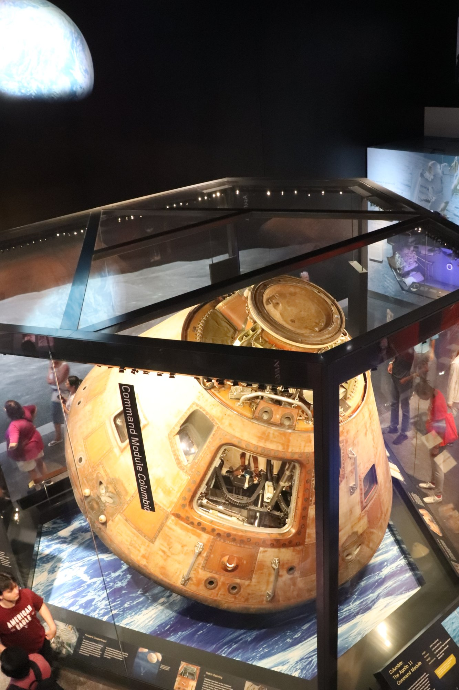
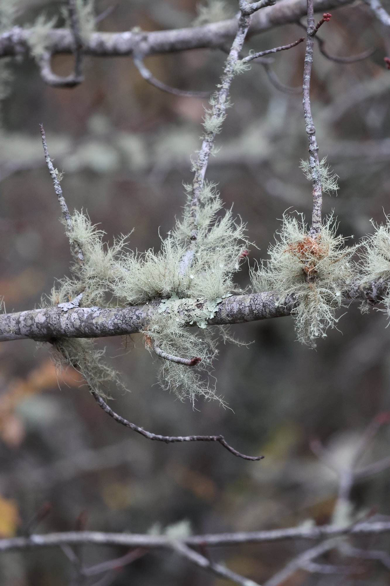
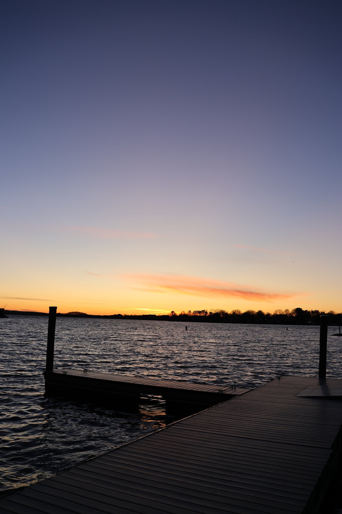

Third-year Ph.D. student researching the intersection of interpretability, fairness, and bias in generative vision — advised by Dr. Depeng Xu & Dr. Cori Faklaris.
From mangas to comic books to detective novels, these things keep me glued all day long. A foodie and a Batman fanatic, I spend most of my leisure time reading about human evolution and anthropology. Right now I'm exploring how to mitigate biases in Text-to-Image models; previously I worked on multimodal understanding of LVLMs and semi-supervised object detection. If you love playing FIFA and talking about research and comic books, do drop by Woodward Hall 3rd Floor, RM 331.
Somewhere, something incredible is waiting to be known.— Carl Sagan
New preprint with Ritabrata Chakraborty et al. Read it on the project site. ↗
🔥Accepted to ACM SIGKDD (18% acceptance). Project site is live — see you in Jeju! 🇰🇷 ↗
Accepted to the IEEE International Conference on Image Processing. See you all in Tampere! 🇫🇮
I'm interested in why generative vision models encode social bias, not just whether they do. In text-to-image diffusion, demographic attributes like gender or race become entangled with ostensibly neutral concepts — a profession, an object, a setting — so that nudging one quietly drags the other along. I treat this concept entanglement as the real object of study: locating where it lives inside a model's cross-attention, measuring it spatially rather than only at the output, and understanding how it forms over the course of generation.
From there the question becomes how to intervene without breaking the model. Instead of retraining on curated data, I look for lightweight, interpretable handles — steering the denoising trajectory, disentangling overlapping concepts, and using causal reasoning to separate what a model should attend to from the spurious correlations it has absorbed. The throughline across diffusion models, flow-based segmentation, and multilingual vision-language systems is the same: make a model's internal decisions legible, then make them fairer.
Building DM-QPMNet, a dual-modality fusion network for cell segmentation in quantitative phase microscopy. Developing physics-aware models that stay robust under low-visibility imaging conditions.
Proposed BiasMap, a model-agnostic pipeline that localizes and quantifies entanglement between demographic and semantic concepts in Stable Diffusion via cross-attention attribution. Designed energy-guided diffusion with a differentiable SoftIoU objective for plug-and-play bias mitigation without retraining.
Co-developed LLAVIDAL, a large language-vision model for activities of daily living, and curated the 100K-pair ADL-X dataset with 3D poses and object trajectories. Built a curriculum-based semi-supervised detector that lifted aerial object-detection mAP by 32% using only 20% ground images.
Engineered a U-Net model for cervical texture segmentation in ultrasound images, improving accuracy and clinical usability. Built an automatic multiclass segmentation pipeline that classified medical-imaging regions by tissue type.
Designed deep local descriptors using CNNs for instance-level recognition of historical architecture. Focused on robust feature matching for heritage-building and landmark recognition.
Developed transfer-learning models for handwritten character recognition, reaching 99.99% accuracy with a VGG16 backbone. Worked on Bangla and Devanagari script-recognition pipelines.
Designed an automatic text-detection pipeline for Indus Valley Civilization seals. Explored computer-vision approaches to localizing undeciphered scripts.
Selected publications. A full and current list lives on my Google Scholar.
Teaching is one of the most rewarding parts of the job. A record of my TA and lead-TA roles below.
New preprint out — Vision-Language Models are Fragile Multilingual Associators (M²BIND), with Ritabrata Chakraborty, Shivakumara Palaiahnakote, Angelo Cangelosi, and Umapada Pal. Project site is live!
Yaay! I have passed my Qualifier Examination!
DM-QPMNet has been accepted to the IEEE International Conference on Image Processing (ICIP) 2026! See you all in Tampere, Finland! 🇫🇮
BiasMap has been accepted to the ACM SIGKDD (KDD) 2026 (18% acceptance rate)! The project website is live. See you all in Jeju, South Korea! 🇰🇷
I gave a contributed talk in Room 213 of Music City Centre, Nashville, TN, at the DemoDiv CVPR workshop on June 11th at 11:45 AM.
BiasMap: Can Cross-Attention Uncover Hidden Social Biases? was accepted at the CVPR 2025 DemoDiv Workshop — my first collaborative work with Dr. Depeng Xu and Dr. Cori Faklaris.
TruthLens preprint is out now!
LLAVIDAL is accepted to CVPR 2025! See you soon, Nashville!
A short version of LLAVIDAL was accepted at the MAR and VLM workshops at NeurIPS 2024!
Paper released — LLAVIDAL: Benchmarking Large Language Vision Models for Daily Activities of Living. Have a look at the website.
MAVREC was accepted at CVPR 2024! See you soon, Seattle!
Service to the research community — reviewing, mentoring, and volunteering.
When I'm not chasing cross-attention maps, I'm chasing light on the street. A rotating set of frames — street, travel, and the in-between.






